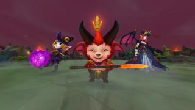

Aqui mostraremos información sobre sobre campeones y noticias de las semanas
Postraos ante Teemo Cuando se le invoca... ¡que los cielos nos asistan!
Pretemporada: práctica La herramienta de prácticas llegará en la temporada 2017. Os contamos en qué consistirá.
Una herramienta para mejorar y dominar vuestras habilidades Por si no lo habíais notado ya, en la temporada 2017 vamos a mejorar y a cumplir promesas antiguas para que vosotros tengáis las herramientas para mejorar en el juego. Acabamos de empezar a trabajar en la herramienta, pero ya podemos comentaros sus características generales. Nuestro primer contacto con la herramienta de práctica será muy sencillo y claro, más parecido a un saco de boxeo para practicar vuestra técnica que a un gimnasio de entrenamiento completo. Además, no nos dirigimos específicamente a los jugadores profesionales con esta herramienta. Todo el mundo, desde Aspirante a Bronce, debería encontrar utilidad en un modo de entrenamiento en solitario en el que poder practicar las mecánicas y el movimiento por el mapa. Pero por ahora no estamos pensando en desarrollar una herramienta multijugador para que los equipos organizados entrenen. Cuando lancemos la primera versión, prestaremos especial atención a si hemos olvidado algo necesario para mejorar en solitario. Con la idea de que League sea un deporte global que dure generaciones, queremos que podáis entrenar de forma más eficiente sin tener que esperar cinco minutos cada vez que queráis practicar una habilidad básica. La herramienta de práctica es la versión de League del saco de boxeo: será como un entrenamiento extra con un campeón con el que no estáis familiarizados para que podáis ir a la Grieta con más seguridad.
A continuación veremos una tabla con las skins de oferta.
| Campeones | Skins | Precio | Syndra | Syndra Atlante | 1350 RP |
|---|---|---|
| Viktor | Viktor creador | 1350 RP |
| Ahri | Ahri Aspirante | 975 RP |
| Udyr | Guardian de los Espiritus | 3150 RP |
Aqui tenemos algunos campeones con sus skins modificadas.
| Skins | Precio | Nuevo precio | Orianna Gótica | 1350 RP |
|---|---|---|
| Lux Elemental | 40000 RP | |
| Ezreal TPA | 1 RP |